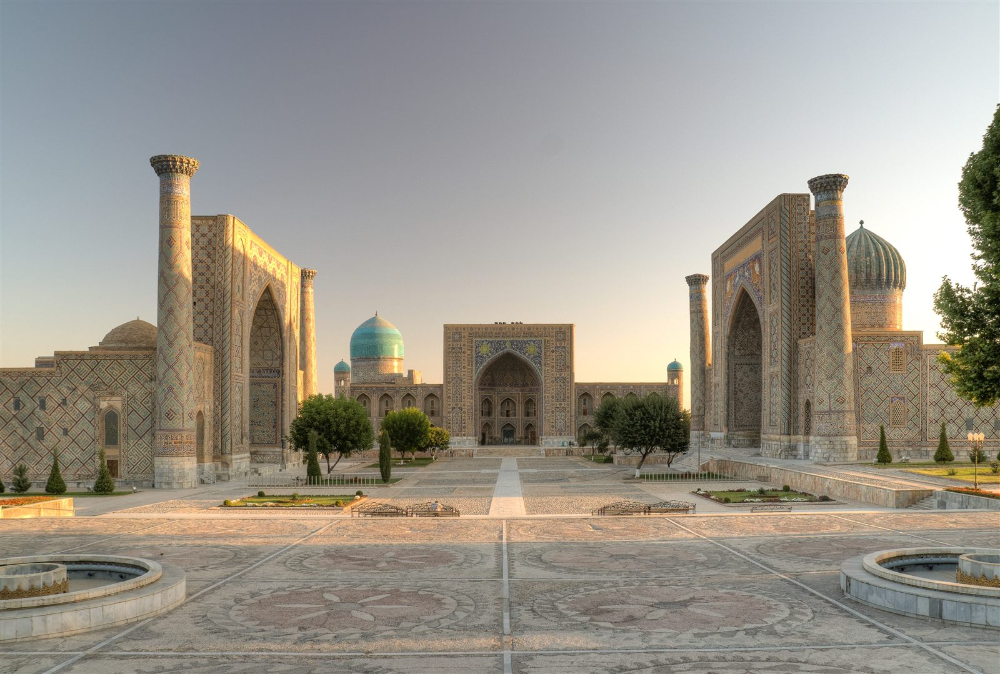
Private Tour $145Samarkand in One Day
A private guide and car for the day: Gur-Emir, Registan, Bibi-Khanym, Shah-i-Zinda and the paper village of Konigil.
★★★★★ 4.9
From a single day in Tashkent to an 8-day Silk Road expedition — find the journey that fits your time and pace.

Private Tour $145A private guide and car for the day: Gur-Emir, Registan, Bibi-Khanym, Shah-i-Zinda and the paper village of Konigil.
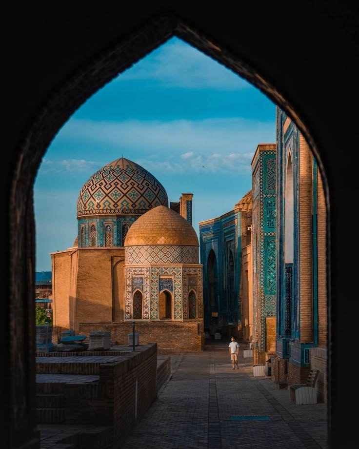
Private Tour $290Day one covers the icons; day two adds the Ulugbek Observatory, a silk carpet workshop and Prophet Daniel's shrine.
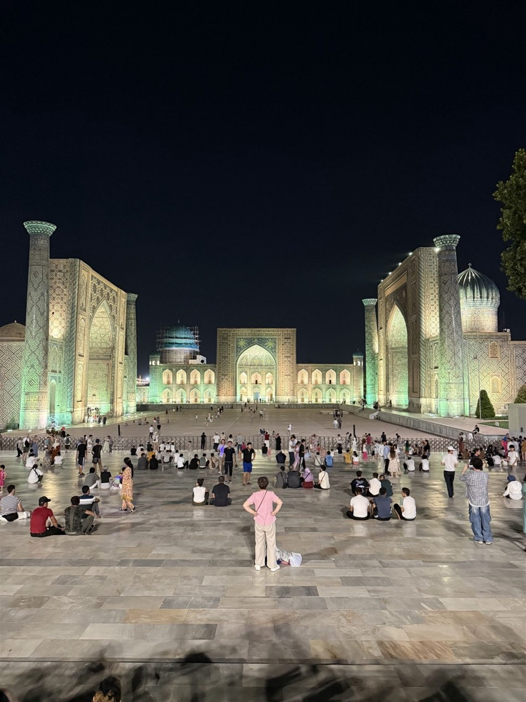
Evening Tour $90An easy evening walk past the illuminated Gur-Emir Mausoleum, Registan Square and Bibi-Khanym Mosque, with a coffee break included.
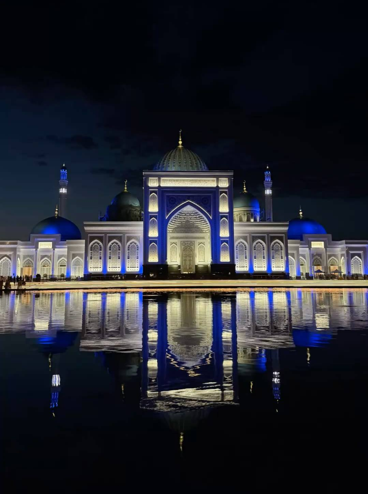
Transfer $50A round-trip transfer from Samarkand to the Imam al-Bukhari memorial complex — about 1.5 hours to explore on site. A guide can be added on request.
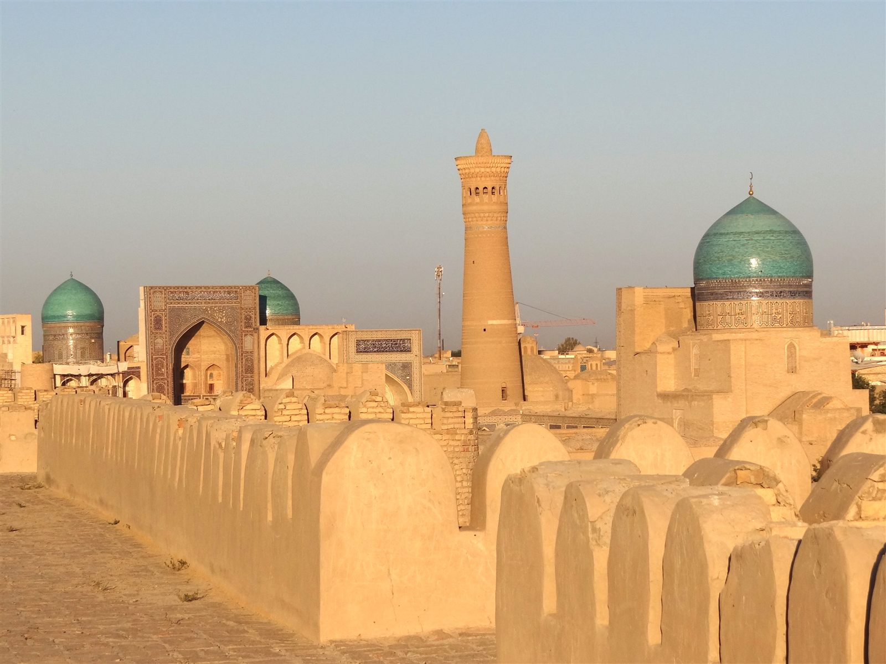
Classic $90Ark Fortress, Poi Kalyan complex, Bolo-Hauz Mosque, Magoki-Attori and Lyabi-Hauz — Bukhara's old city in a single day.
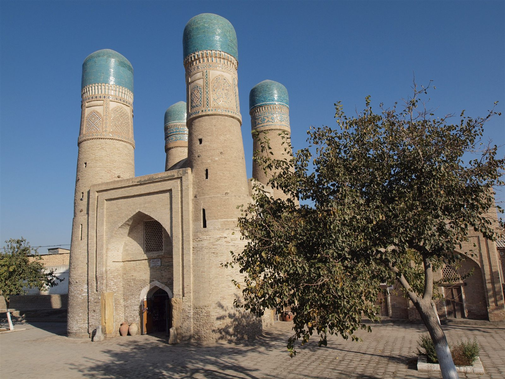
Private Tour $145Beyond the old city: the emir's summer palace, the shrine of Bahauddin Naqshband, Chor-Minor and the Chor-Bakr necropolis.
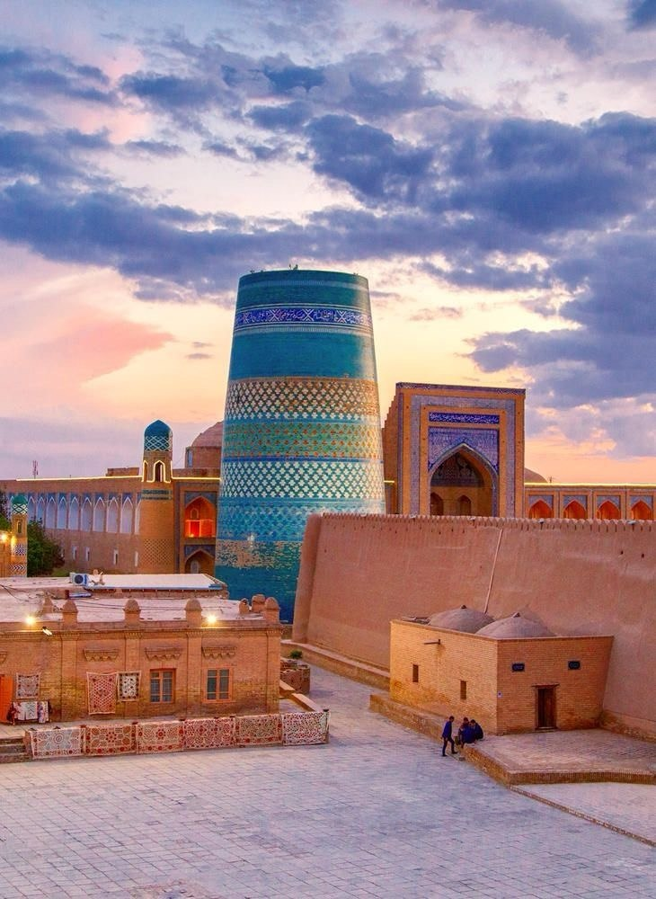
Walking Tour $90All ten icons of Itchan Kala in a single guided walk — from the Ata-Darvaza gate to the Tash-Hovli Palace.
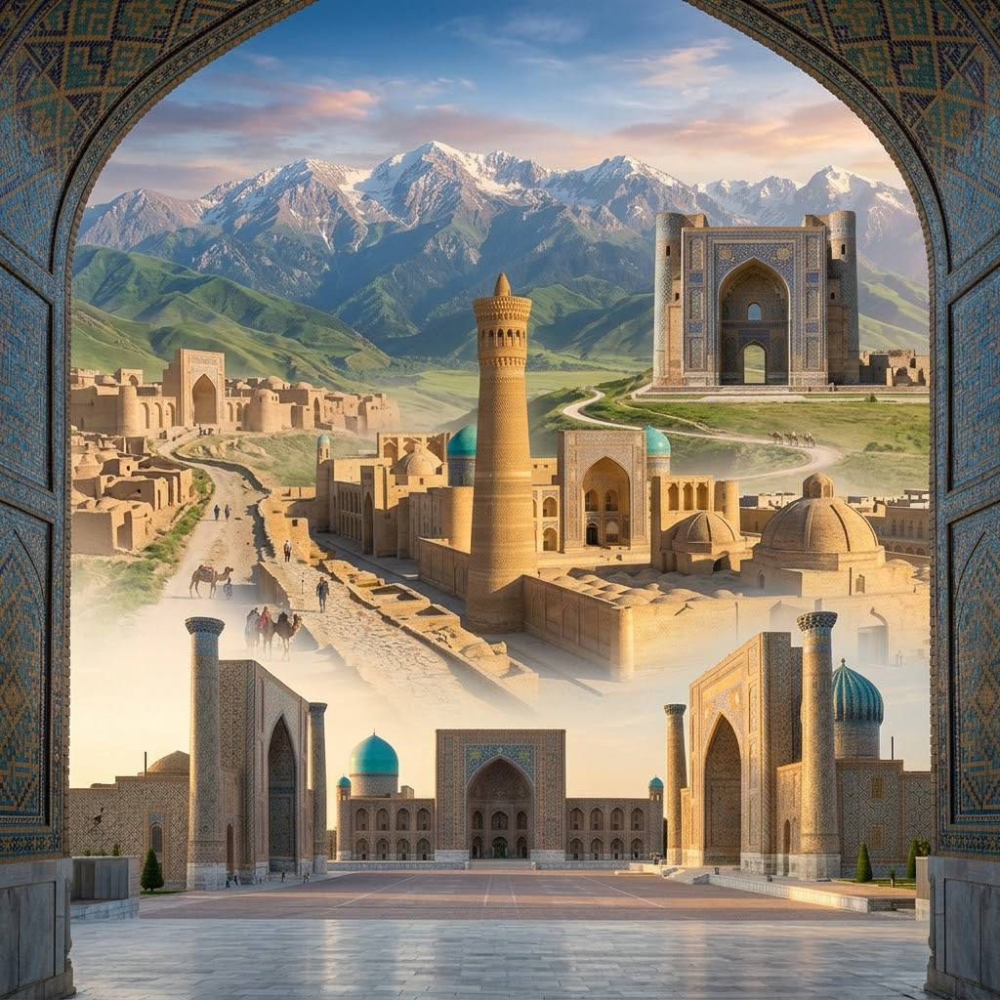
Private Tour Ask for PriceSamarkand on foot and by car, a high-speed day trip to Bukhara, and a scenic drive to Shakhrisabz — a fully private week across the Silk Road.
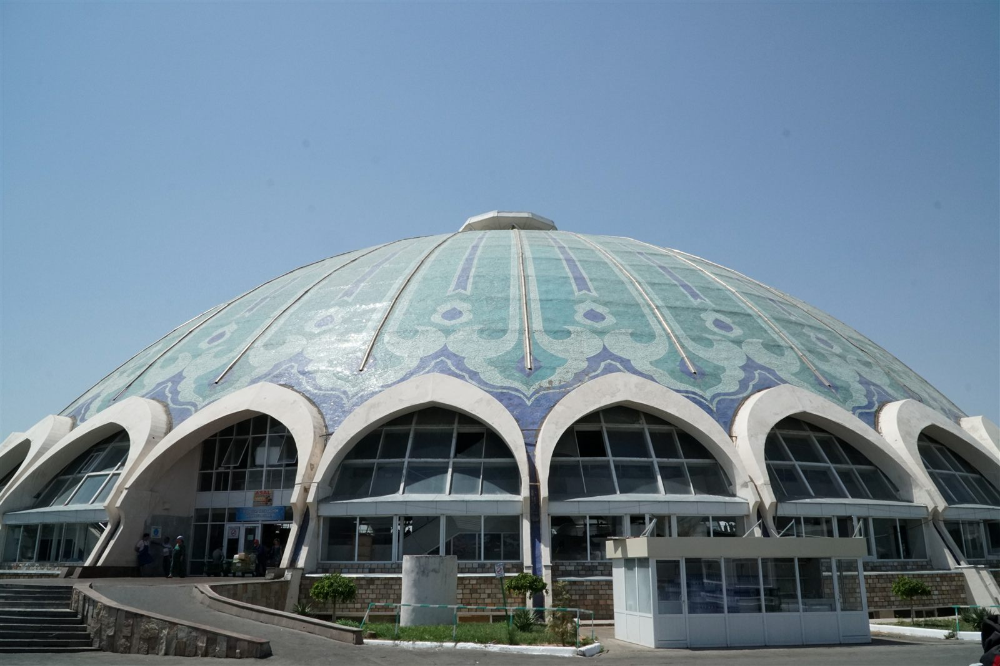
Day Trip $145Chorsu Bazaar, Hast Imam Complex, Independence Square, the Romanov Palace and Amir Temur Square.
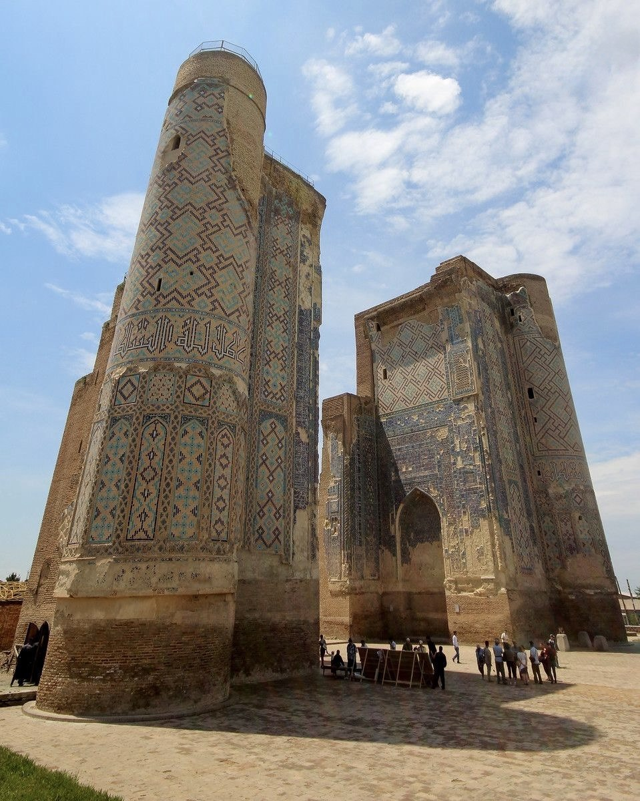
UNESCO Site $150Over the Tahtakaracha Pass to Amir Temur's hometown: the ruined Ak-Saray Palace, the Dorus-Saodat and Dorut-Tillavat complexes, and Kok-Gumbaz Mosque.
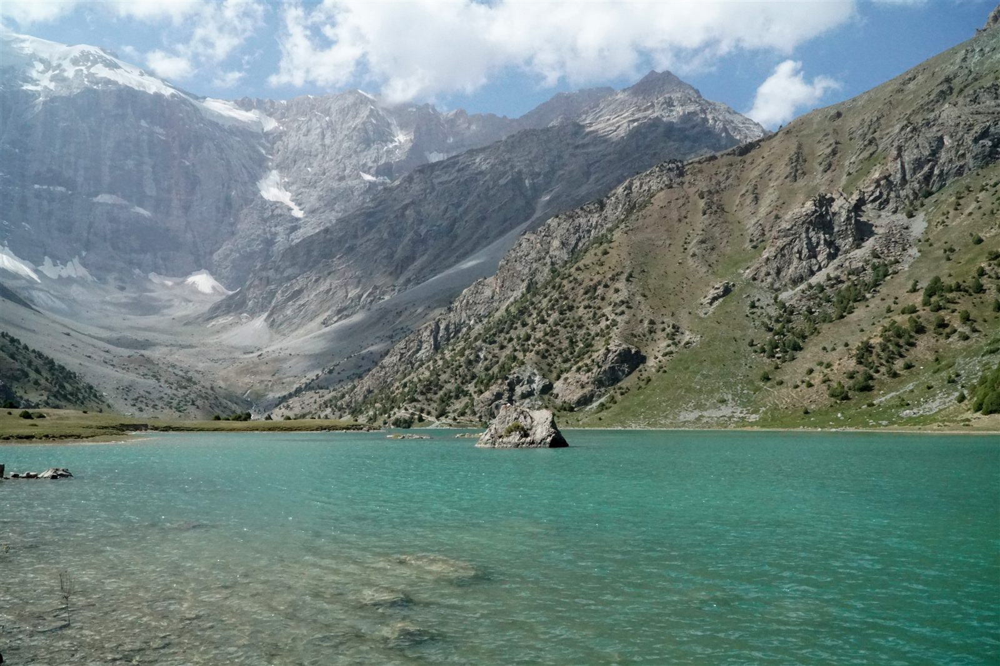
Cross-Border Ask for PriceCross into Tajikistan's Fann Mountains to see the turquoise Marguzor Lakes cascading through a mountain valley.
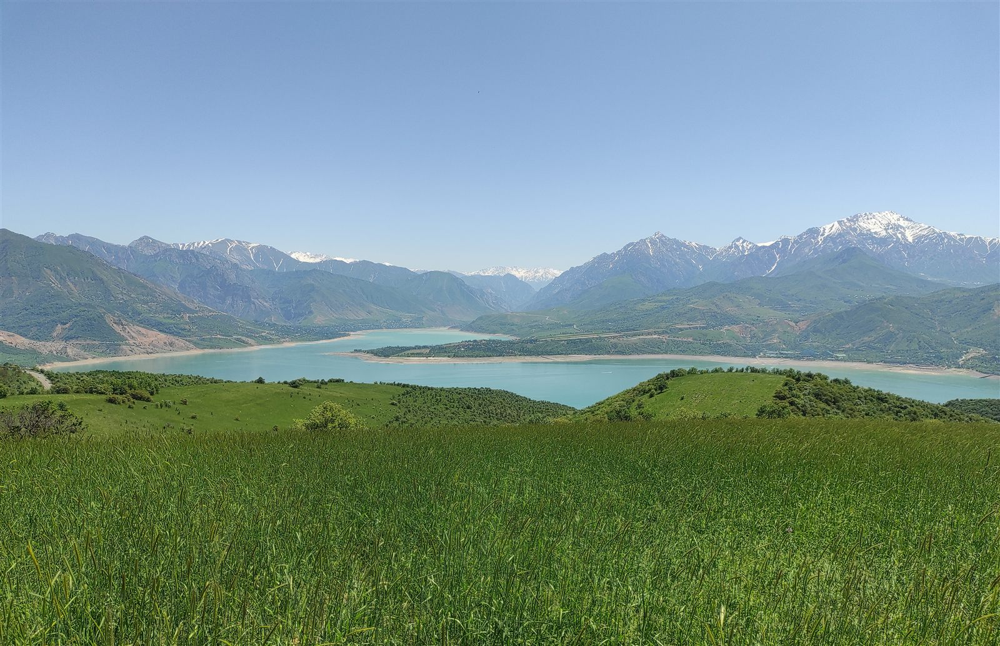
Day Trip $150Escape the city for the Western Tian Shan: a cable-car ride at Amirsoy Resort, the peaks of Chimgan and a turquoise mountain lake.
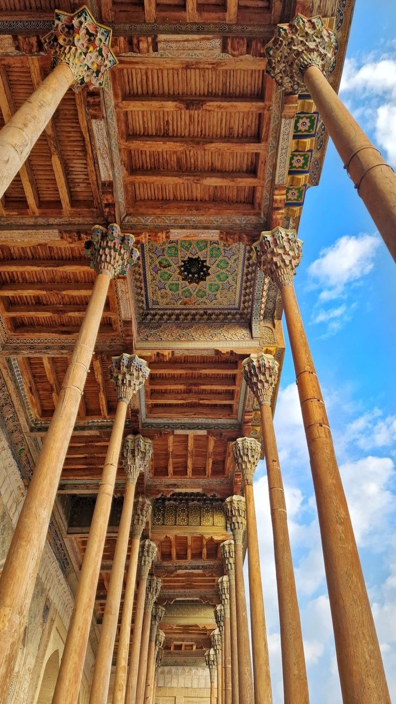
Build Your Own On RequestHave your own dates, cities and pace in mind? Tell us what you want to see, and we'll put together a private itinerary built entirely around your request.
Not Sure Which Tour?
Tell us your dates, budget and interests — we'll design a private trip around them.